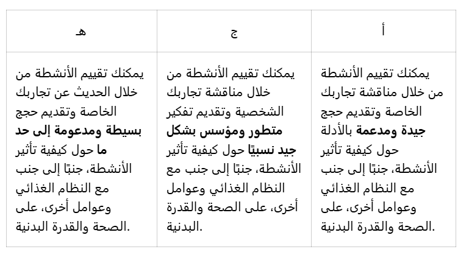

مقدمة
يتعلق النوع الاجتماعي بالتوقعات والمواقف التي نساهم جميعًا في تكوينها. في هذا القسم، ستكتسب معرفةً حول النوع الاجتماعي، مع التركيز على تسليط الضوء على كيفية قيام الثقافة بتشكيل وخلق مجالات مختلفة للجنس، بالإضافة إلى كيفية تأثرنا بالأدوار الجندرية عند اختيار الأنشطة الرياضية. كما سنناقش أيضًا موضوع المثلية الجنسية والرياضة.
قضية:
- لفهم مفاهيم الجنس والنوع الاجتماعي وكيف تؤثر هذه المفاهيم على اختيارنا للأنشطة الرياضية
- لتعلم ما تعنيه وجهات النظر البيولوجية ومنظورات النوع الاجتماعي.
المحتوى المركزي
يغطي القسم المحتوى الرئيسي التالي:
- يتأثر اختيار الفرد للرياضة والأنشطة البدنية الأخرى بعوامل مختلفة، مثل الجنس.
معايير التصنيف
المفاهيم في هذا القسم
- جنس
- الأدوار الجندرية
- منظور علم الأحياء
- منظور النوع الاجتماعي
- المثلية الجنسية